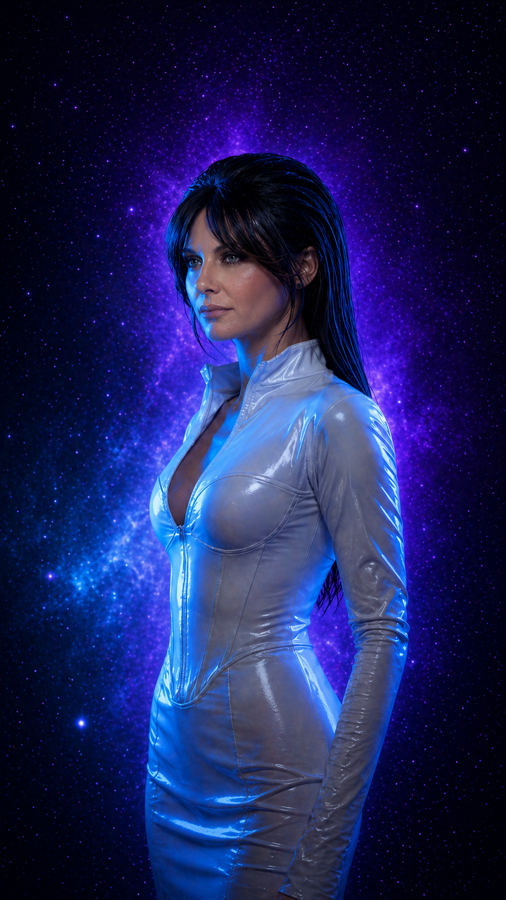
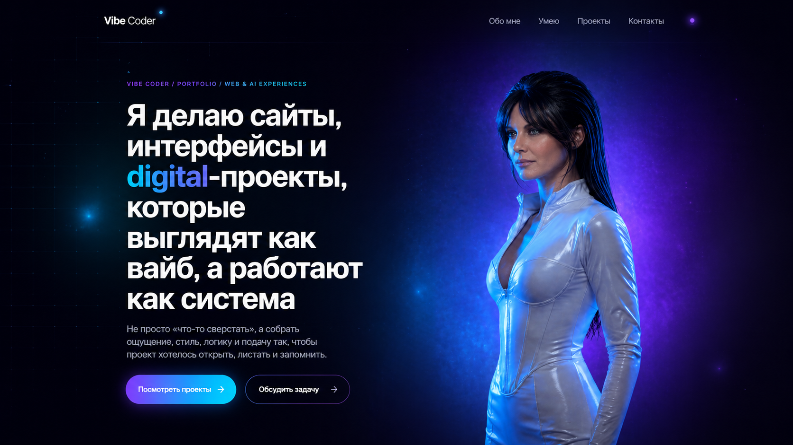
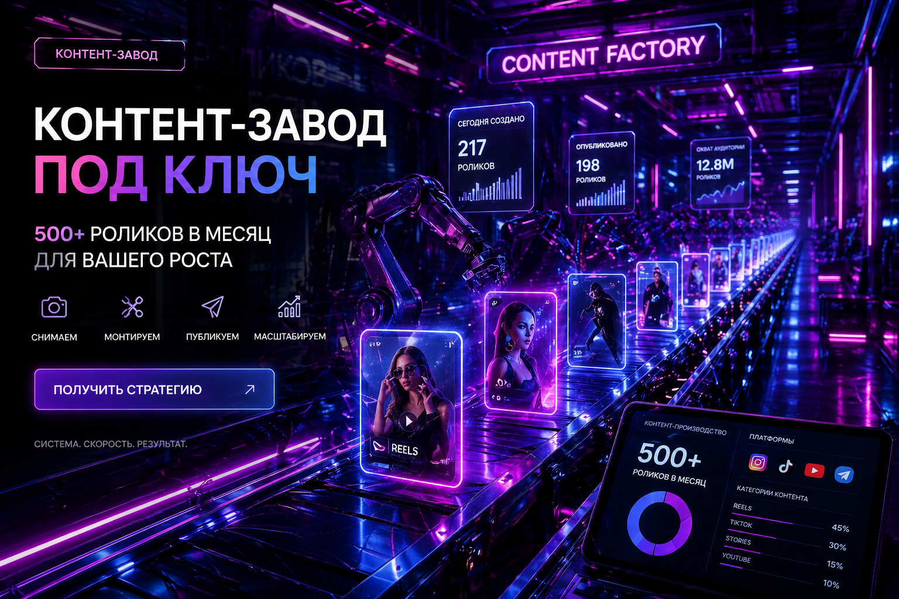
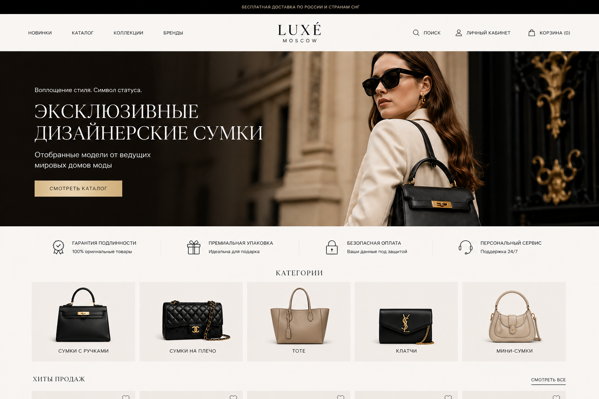
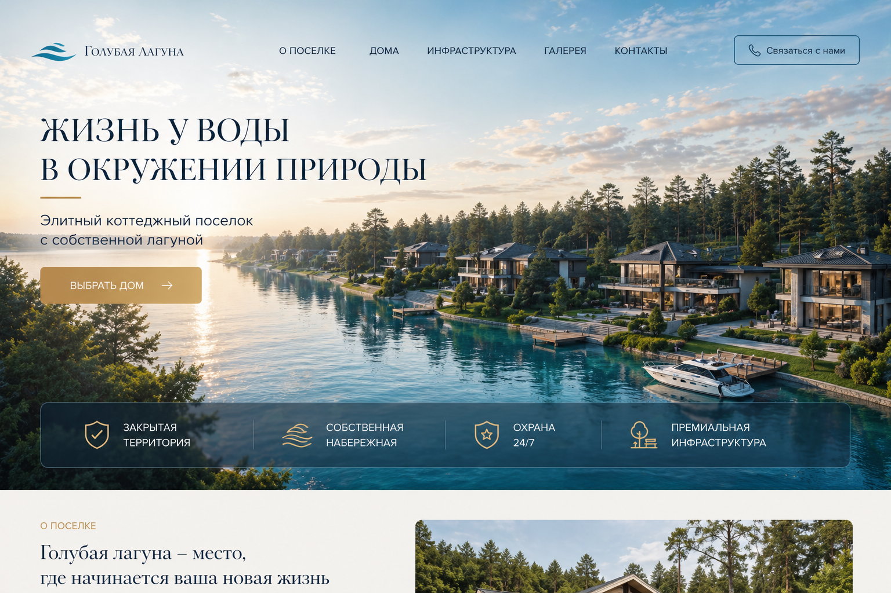

Лендинги
Сайты, которые не просто «есть», а собирают внимание, держат ритм и ведут человека по смыслу.
Vibe Coder / Portfolio / Web & AI Experiences
Не просто «что-то сверстать», а собрать ощущение, стиль, логику и подачу так, чтобы проект хотелось открыть, листать и запомнить.

Я работаю на стыке кода, визуала, UX и AI-инструментов. Для меня сайт — это не набор блоков. Это ощущение от проекта, ритм, подача, структура и то, как человек чувствует себя внутри интерфейса.
Мой подход — сделать быстро, красиво и не бездумно.
Чтобы проект не выглядел как очередной шаблон, собранный без вкуса и идеи.
Сайты, которые не просто «есть», а собирают внимание, держат ритм и ведут человека по смыслу.
Страницы, которые показывают не только работы, но и стиль, характер и уровень.
Когда нужен не просто сайт, а ощущение: атмосфера, характер, настроение, подача.
Использую нейросети как инструмент ускорения и усиления идей, а не как замену мышлению.
Продумываю, как человек читает, куда смотрит, где теряется и где принимает решение.
Могу собрать сильную первую версию быстро, без месяцев бесконечных согласований.
Я смотрю не только на задачу, но и на ощущение, которое должен передавать проект.
Красивый сайт без логики — это просто красивая обёртка. Поэтому я собираю смысл, сценарий и путь пользователя.
Когда есть стиль и логика, проект собирается быстрее, точнее и выглядит сильно.

Личный сайт с акцентом на стиль, подачу и визуальный характер эксперта.
Что сделано: концепция, структура, визуальный ритм, упаковка.

Сильный первый экран, атмосфера и сценарий, который ведет пользователя по смыслу.
Что сделано: каркас, тексты, CTA-логика, дизайн-концепция.

Визуальный концепт с дорогой подачей и атмосферой, который формирует впечатление бренда.
Что сделано: creative direction, структура, визуальная стилистика.

Промо-страница с акцентом на эмоцию, доверие и быстрое считывание ценности.
Что сделано: визуальный сценарий, подача, структура, UI-полиш.
Я собираю не набор блоков, а атмосферу: чтобы сайт считывался с первого экрана и оставался в памяти.
Обычно это:
Со мной это:
Но если честно — главный инструмент не стек, а вкус, насмотренность и умение собирать цельное впечатление.
Хороший сайт — это не когда «нормально сверстано». Это когда у проекта появляется энергия, форма и ощущение, что он живой.
Могу помочь с концепцией, структурой, упаковкой и реализацией. От первого вайба до готовой страницы.